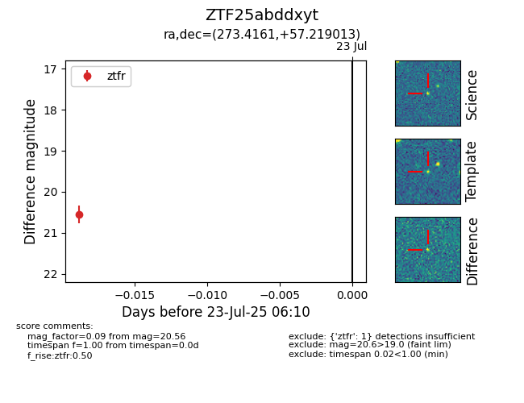

Target ZTF25abddxyt at 2025-07-23 12:37, see:
FINK: fink-portal.org/ZTF25abddxyt
Lasair: lasair-ztf.lsst.ac.uk/objects/ZTF25abddxyt
ALeRCE: alerce.online/object/ZTF25abddxyt
alt names
ZTF25abddxyt (ztf,fink)
coordinates:
equatorial (ra, dec) = (273.4161,+57.21901)
galactic (l, b) = (85.8924,+27.54390)
photometry
last ztfr=20.56
1 ztfr detections
